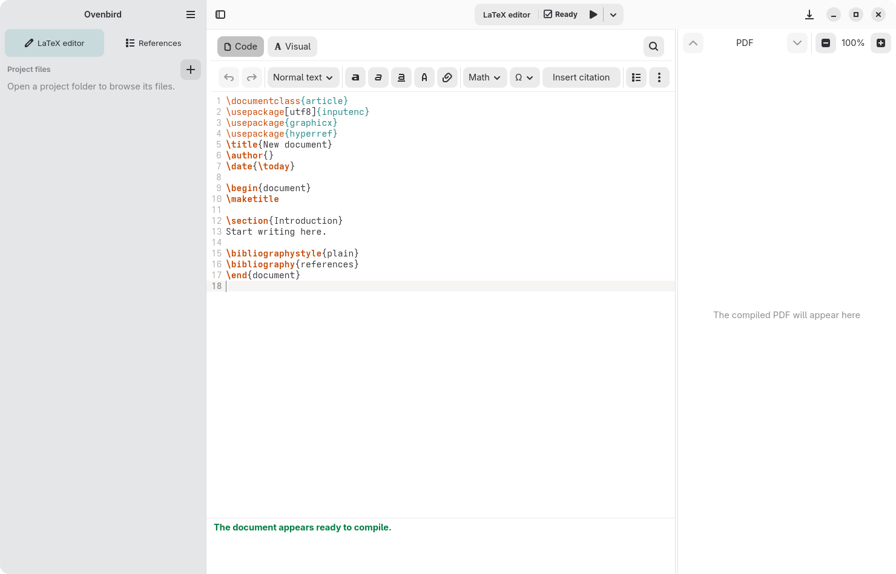
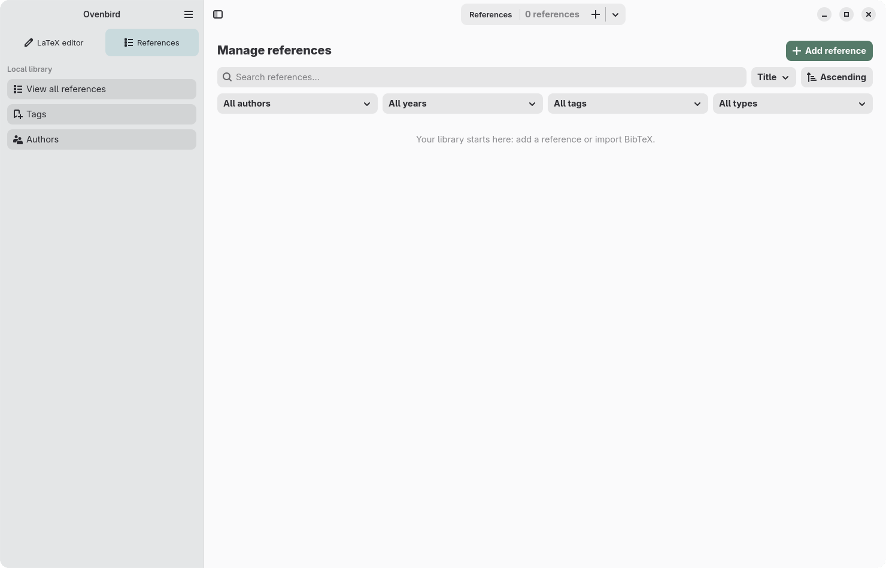

Dois modos, um documento
Alterne entre Código e Visual no mesmo conteúdo LaTeX. O modo Visual ajuda nas tarefas comuns e o código original segue acessível.
Escrita científica · GNOME · LaTeX
Ovenbird reúne edição de documentos LaTeX e uma biblioteca bibliográfica local em um aplicativo feito para o GNOME. Seus arquivos continuam sendo seus: simples, portáteis e sem formato proprietário.
Baixe o app ↓ Conheça os recursos ↓Versão 0.4.0 disponível


01 · Download
A versão 0.4.0 para Linux x86_64 está disponível para download em formato Flatpak.
Se o Flatpak ainda não estiver configurado no seu computador, siga as instruções para preparar o seu sistema antes de instalar o app.
Baixar Ovenbird 0.4.002 · Recursos
Alterne entre Código e Visual no mesmo conteúdo LaTeX. O modo Visual ajuda nas tarefas comuns e o código original segue acessível.
Cadastre, busque e organize referências em uma biblioteca independente dos seus projetos. Insira citações nos documentos LaTeX.
Importe arquivos .bib e exporte sua biblioteca para compartilhar referências entre projetos e ferramentas.
Interface construída com GTK 4 e Libadwaita, pensada para Linux GNOME.
03 · Como funciona
O Ovenbird trabalha com formatos conhecidos. Abra um documento ou pasta de projeto e continue usando suas ferramentas.
Seus documentos são arquivos .tex comuns, sem formato fechado.
Abra arquivos pelo seletor do desktop. O app não pede acesso irrestrito à sua pasta pessoal.
A biblioteca é mantida no seu computador e funciona sem conexão.

04 · Criador do projeto
Sou engenheiro de software e pesquisador. Criei o Ovenbird para reunir a escrita em LaTeX e o gerenciamento de bibliografias em um aplicativo nativo para GNOME.
Conheça meu site ↗